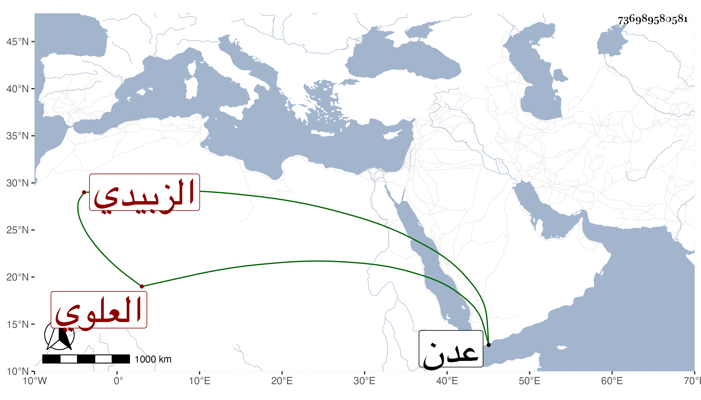

0902Sakhawi.DawLamic.ITO20230111-ara1.EIS1600.736989580581
Biography ID: 736989580581
46
عبد الله بن إسماعيل بن عبد الله بن عبد الرحمن بن محمد بن يوسف ابن عمر بن علي بن عمر بن أبي بكر العفيف أبو الخير بن الشرف العلوي الزبيدي الماضي جد أبيه الوجيه صاحب البديعية . كان رجلا كاملا متواضعا مشاركا في علوم كثير الذكر دائم الفكر اشتغل بالأسماء والأوفاق وشارك في علم النجوم وفاق في حساب الديوان ولذا أقام في خدمة المسعود آخر ملوك بني رسول حتى مات بثغر عدن سادس عشري جمادى الثانية سنة خمس ولم يكن يشارك أبناء جنسه من المباشرين إلا بقدر الحاجة وله طريقة في تقريب الحساب معروفة عند رفقائه وأمثاله . أفاده لي بعض أصحابنا اليمانيين .
